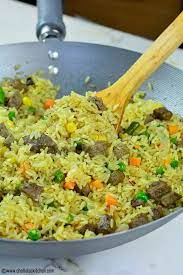

DESCRIPTION
Nigerian Fried Rice is a very simple yet delicious recipe. This version relies on a ton of fresh vegetables, Beef Liver, and a little bit of oil for crisping it up.
INGREDIENTS
- Rice
- Frying Oil
- Onions
- Thyme
- Curry Powder
- Liver
- Carrot
- Sweet Pea
- Sweet Corn
- Cayenne Pepper
STEPS
- Add the boiled rice to the stock in a medium pot and cook on medium heat until the water is dried up.
- Preheat the oil in a pan on medium to high heat, throw in the onions, and fry for a minute or two; add the scallions, mixed vegetables, thyme, curry powder, salt, and stock Cube.
- Throw in the beef liver and rice — Stir-fry for about 3 to 5 minutes on high heat.
- Take it off the heat and serve.